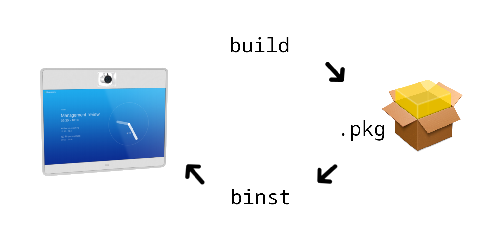
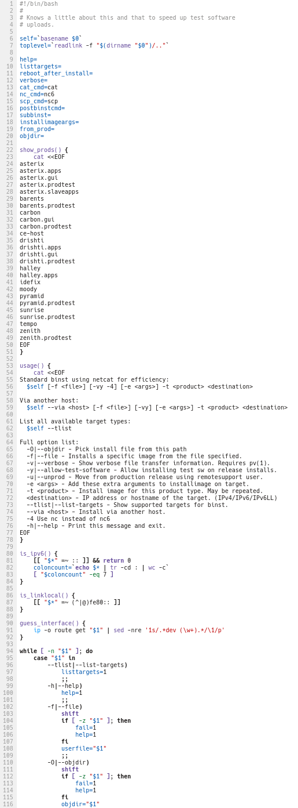
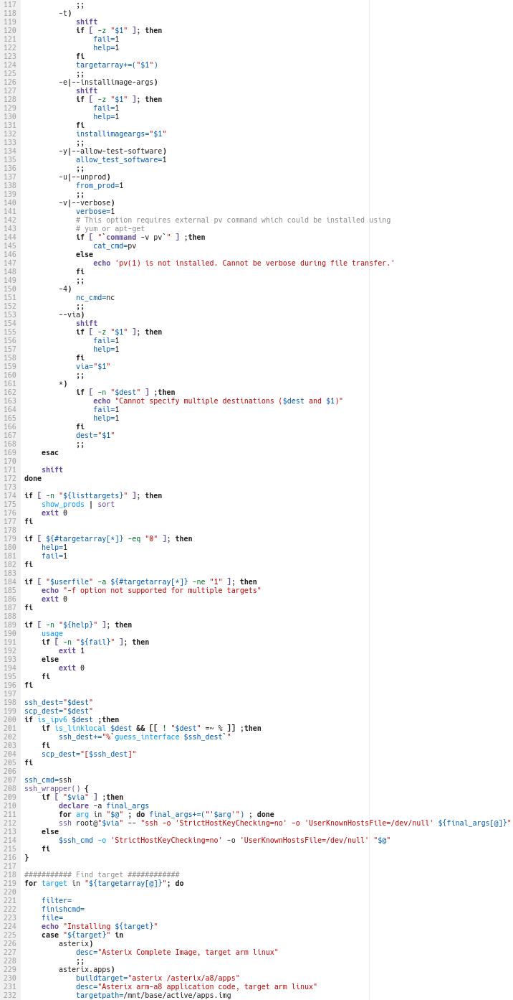
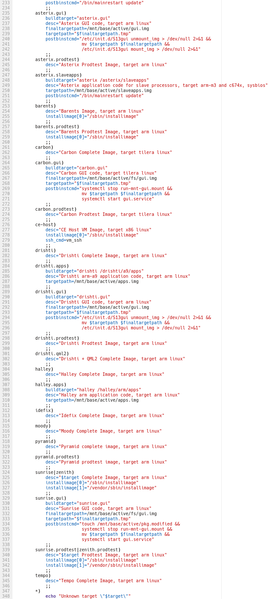
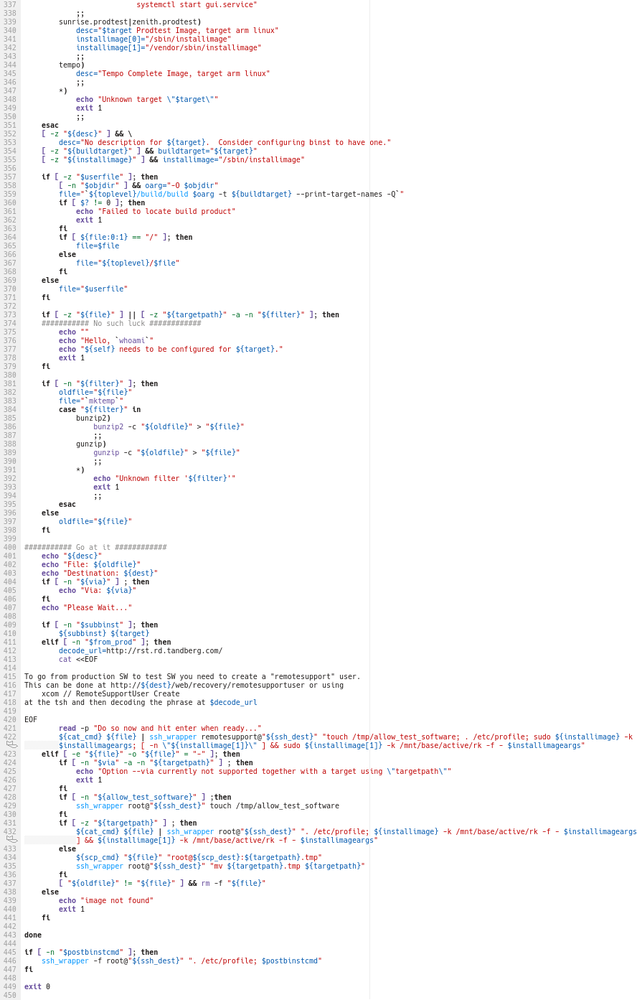
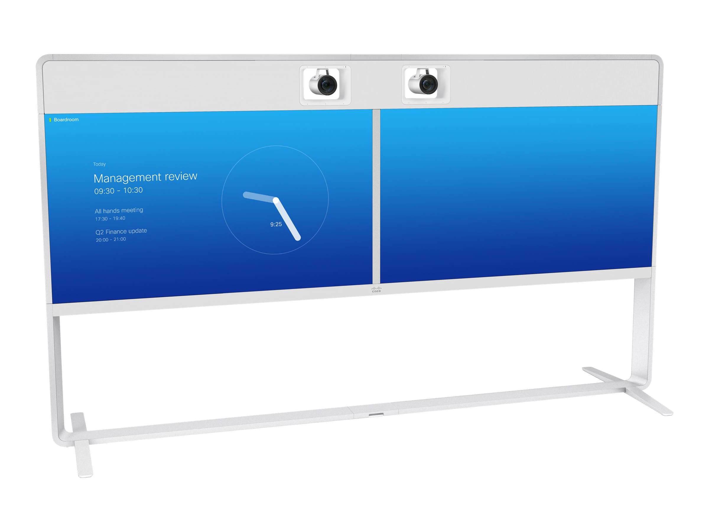
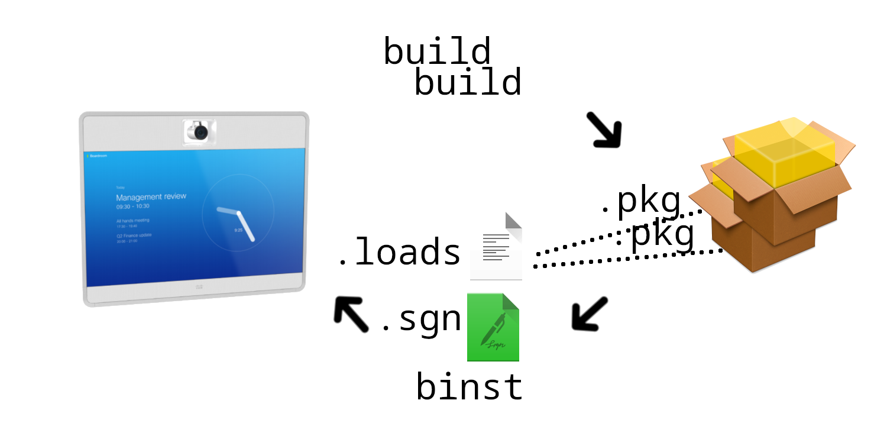

class: inverse-empty --- class: center, middle, inverse # Building useful project utils in Python ## From spaghetti shell scripts to presentable Python Johan Herland<br /> <a href="https://twitter.com/jherland">@jherland</a><br /> <<a href="mailto:jherland@cisco.com">jherland@cisco.com</a>><br /> <<a href="mailto:johan@herland.net">johan@herland.net</a>> ??? Who am I? - Software Engineer at Cisco Systems Norway, developing videoconferencing systems - Work on: - Some applicaton-level programming - More underlying platform work - Version control, build systems, developer tools --- # Prerequisites - Basic familiarity with Unix shell scripting (<code>bash</code>) - Some familiarity with <code>python3</code> (<code>python2</code> also works, but YMMV) --- # Outline - Motivation - What scripts are we talking about? - Shell scripts! What are they good for? - Why is Python better? - Shell → Python — Tips + Techniques - Code organization - Command-line interfaces in Python - Running other programs from Python - Manipulating the filesystem from Python - Writing unit tests in Python - A controversial take on error handling - Case study — <code>binst</code> - A real-world rewrite from Shell to Python - Adding features that would have been impossible in Shell - Summary - Q & A --- class: center, middle, inverse # Motivation --- class: split-50 ## What scripts are we talking about? "The glue that holds your project together" .column[ ### Developer tools - Wrappers for more complex commands - Workflow helpers ### Build-time - Small + simple build systems - Build system helpers, plug-ins - Code generators ] .column[ ### Packaging, deployment, release, ... - Signing images - Publishing assets ### In production - Embedded targets - Inside deployed containers ] --- class: split-50 ## Shell scripts! What are they good for? .column[ ### Pros - Short and simple stuff - Straightforward logic - No data structures ] -- .column[ ### Cons - Scripts grow, in length and complexity - Complex logic - Data structures - Configurability - Reusability - Safety! ] --- ## Why is Python better? ### Showdown! Shell vs. Python --- class: split-50 ## Why is Python better? — Syntax .column[ ### Shell - Reasonably easy to become productive - Similar to command-line; skills are transferable - Complexity → write-only - Trivial (and necessary) to run other programs - Many pitfalls, hard to become **safe** - Many online resources/examples - **Common practice** != **Best practice**! ```bash filename="My favourite quotations.txt" touch $filename ``` ] -- .column[ ### Python - Simple and beginner-friendly syntax - Considered one of the more readable languages - Not as trivial to run other programs - Fewer pitfalls than shell. - Lots of literature and resources. - Harder to come across "dangerous" examples ] --- class: split-50 ## Why is Python better? — Data structures and types .column[ ### Shell - Everything is a string - Whitespace in values often cause problems, and must be handled carefully - Some support for integer arithmetic - Some support for arrays <blockquote> <small>«Unlike many other programming languages, Bash does not segregate its variables by "type." Essentially, Bash variables are character strings, but, depending on context, Bash permits arithmetic operations and comparisons on variables. The determining factor is whether the value of a variable contains only digits.»</small><br /> <br /> — <a href="https://tldp.org/LDP/abs/html/untyped.html">Advanced Bash-Scripting Guide</a> </blockquote> ] -- .column[ ### Python - Dynamically (but strongly) typed - Built-in types: - Numerics — <code>int</code>, <code>float</code>, <code>complex</code> - Sequences — <code>list</code>, <code>tuple</code>, <code>range</code> - Text and binary data — <code>str</code>, <code>bytes</code>, ... - Sets — <code>set</code>, ... - Mappings — <code>dict</code> - Others: - Modules - Classes and Class instances - Functions and Methods - Iterators and Generators - Exceptions - ... ] --- class: split-50 ## Why is Python better? — Modularity .column[ ### Shell *Within* files: functions - (sometimes non-obvious behavior, though, e.g. variables have global scope by default) *Between* files: access in two ways: 1. Direct call (*think:* run as subprocess) 2. Use <code>source</code><br /> (*think:* <code>#include</code> — no namespaces!) However, a script cannot easily figure out if it has been *called* or *sourced*, so scripts are typically **either** written for immediate usage **or** a as *bag of functions* reusable by sourcing (but does nothing when called). ] -- .column[ ### Python *Within* files: functions, classes, data, ... *Between* files: access in two ways: 1. <code>import</code> 2. Call via <code>subprocess</code> Modules with <code>\_\_main\_\_</code> guards allows **both** for importability, and for immediate usage! ] --- class: split-50 ## Why is Python better? — Modularity (cont.) .column[ <tt>foo.sh</tt>: ```bash #!/bin/sh echo "This is always run" foo() { echo "This is foo" } ``` <tt>bar.sh</tt>: ```bash #!/bin/sh source foo.sh foo() ``` ] -- .column[ <tt>foo.py</tt>: ```python #!/usr/bin/env python3 print("This is always run") def foo(): print('This is foo') if __name__ == '__main__': print("Skipped when this file is imported") ``` <tt>bar.py</tt>: ```python #!/usr/bin/env python3 import foo foo.foo() ``` ] --- class: split-50 ## Why is Python better? — Tools & Libraries .column[ ### Shell - Language itself is very minimal - Use system binaries from Unix ecosystem to do heavy lifting ] -- .column[ ### Python - Very rich stdlib — can do most things "within" the language - Lots more 3<span class="ordinal">rd</span>-party modules available (e.g. Python Package Index) - Use <code>subprocess</code> module to call out to other binaries ] --- class: center, middle, inverse # Shell → Python ## Tips + Techniques --- ## Code organization - Start by simply transcribing your shell script into Python! - One statement after another - No change in structure - Everything is run from top to bottom -- - Refactor code into functions, classes, data structures, ... - Incrementally improve the structure of your script -- - Add the <code>\_\_main\_\_</code> guard - Makes the functions/classes/data reusable from other scripts -- - Add a <code>main()</code> function - Common convention in python - Other scripts can now <code>import</code> + <code>main()</code> instead of <code>subprocess.run()</code> -- - Split reusable functionality into separate/stand-alone modules - Add unit tests here to verify API + functionality --- ## Command-line interfaces in Python ### Follow Unix conventions: - Exit code 0 → success, non-zero → failure - Default exit code from python is 0 - Uncaught exceptions result in exit code 1 - Use <code>sys.stdin</code>/<code>sys.stdout</code> for default I/O - <code>print()</code> defaults to <code>sys.stdout</code> - Log errors to <code>sys.stderr</code> - The <code>logging</code> module defaults to <code>sys.stderr</code> - Mandatory command-line args are *positional* - Optional command-line args use <code>--dashes</code> -- ### Use <code>argparse</code> ↓ --- class: split-72 Using <code>argparse</code>: .column[ ```python #!/usr/bin/env python3 '''Calculate the square of a given number.''' import argparse import sys def calc(num, exp): return num ** exp def main(): parser = argparse.ArgumentParser(description=sys.modules[__name__].__doc__) parser.add_argument( 'num', type=int, help='the number to be squared') parser.add_argument( '--cube', '-3', action='store_true', help='calculate the cube (instead of square)') parser.add_argument( '--file', '-f', type=argparse.FileType('w'), default=sys.stdout, help='write result here (stdout by default)') args = parser.parse_args() result = calc(args.num, 3 if args.cube else 2) print(result, file=args.file) if __name__ == '__main__': main() ``` ] -- .column[ ```python # <- Module docstring # (.__doc__ on the module) # <- Reusable function: import myscript myscript.calc(123, 2) # <- Reuse module docstring # in usage help text # <- Positional integer arg # <- Optional arg, boolean, # default: False # <- Optional arg, open file # <- __main__ guard ``` ] --- ```xml $ ./myscript.py usage: myscript.py [-h] [--cube] [--file FILE] num myscript.py: error: the following arguments are required: num ``` -- ```xml $ ./myscript.py -h usage: myscript.py [-h] [--cube] [--file FILE] num Calculate the square of a given number. positional arguments: num the number to be squared optional arguments: -h, --help show this help message and exit --cube, -3 calculate the cube (instead of square) --file FILE, -f FILE write result here (stdout by default) ``` -- ```xml $ ./myscript.py 5 25 ``` -- ```xml $ ./myscript.py 5 -3 125 ``` -- ```xml $ ./myscript.py 10 -3 -f foo $ cat foo 1000 ``` --- ## Running other programs from Python — <code>subprocess</code> ### Simple cases ```python import subprocess # Prepare command as a list of strings argv = ['ping', '-c1', 'google.com'] # Run command, get its exit code exitcode = subprocess.run(argv).returncode # Run command, raise exception on non-zero exit code subprocess.run(argv, check=True) # Run command, raise exception if it fails, capture its output result = subprocess.run(argv, check=True, capture_output=True) output, errors = result.stdout, result.stderr ``` -- ### More complex cases See https://docs.python.org/3/library/subprocess.html --- class: split-50 ## Manipulating the filesystem from Python — <code>pathlib</code> .column[ - Features: - Creating/moving/removing files and dirs - Looking for specific (types of) files - Handling *relative* vs *absolute* paths - Replaces/supersedes: - Parts of <code>os.path.\*</code> and elsewhere in <code>os.\*</code> - <code>fnmatch.fnmatch()</code> and <code>glob.glob()</code> - https://docs.python.org/3/library/pathlib.html ### Other modules - <code>os</code> and <code>os.path</code> - <code>shutil</code> ] -- .column[ ```python from pathlib import Path mydir = Path.cwd() / 'mydir' mydir.mkdir(exist_ok=True) foo = mydir / 'foo.txt' if foo.exists(): foo.rename(foo.with_suffix('.backup')) with foo.open('w') as f: for path in mydir.iterdir(): print(path.relative_to(mydir), file=f) for path in mydir.glob('*.backup'): path.unlink() ``` ] --- class: split-50 ## Writing unit tests in Python .column[ ### What to test - As much as possible - Certainly reusable functionality ### Available frameworks - <a href="https://docs.python.org/3/library/doctest.html"><code>doctest</code></a> - <a href="https://docs.python.org/3/library/unittest.html"><code>unittest</code></a> - <a href="https://docs.pytest.org/en/latest/"><code>pytest</code></a> (not in the standard library) - Many others... ] -- .column[ ### Note This is not a talk on test frameworks or unit testing in general. For everything but the smallest scripts, put your tests in separate files, or even separate directories, but here we'll look at how you can put small tests in the same file as the rest of the script. ] --- Remember? ```python #!/usr/bin/env python3 '''Calculate the square of a given number.''' import argparse import sys def calc(num, exp): return num ** exp def main(): parser = argparse.ArgumentParser(description=sys.modules[__name__].__doc__) parser.add_argument( 'num', type=int, help='the number to be squared') parser.add_argument( '--cube', '-3', action='store_true', help='calculate the cube (instead of square)') parser.add_argument( '--file', '-f', type=argparse.FileType('w'), default=sys.stdout, help='write result here (stdout by default)') args = parser.parse_args() result = calc(args.num, 3 if args.cube else 2) print(result, file=args.file) if __name__ == '__main__': main() ``` --- class: split-50 ## Writing unit tests in Python — <code>doctest</code> .column[ Ad-hoc testing: ```bash $ python Python 3.7.0 (default, Jul 15 2018, 10:44:58) [...] >>> import myscript >>> myscript.calc(3, 2) 9 ``` Let's formalize that a bit: ```python def calc(num, exp): '''Return 'num' raised to the power of 'exp'. >>> [calc(0, 2), calc(1, 2), calc(2, 2)] [0, 1, 4] >>> [calc(0, 3), calc(1, 3), calc(2, 3)] [0, 1, 8] ''' return num ** exp ``` ] -- .column[ Run tests from command-line: ```bash $ python -m doctest myscript.py -v Trying: [calc(0, 2), calc(1, 2), calc(2, 2)] Expecting: [0, 1, 4] ok Trying: [calc(0, 3), calc(1, 3), calc(2, 3)] Expecting: [0, 1, 8] ok 2 items had no tests: myscript myscript.main 1 items passed all tests: 2 tests in myscript.calc 2 tests in 3 items. 2 passed and 0 failed. Test passed. ``` Run tests from within the script: ```python if __name__ == '__main__': import doctest doctest.testmod() ``` ] --- class: split-50 ## Writing unit tests in Python — <code>unittest</code> .column[ ```python import unittest ... class TestSquare(unittest.TestCase): def test_zero_squared_is_zero(self): self.assertEqual(0, calc(0, 2)) def test_one_squared_is_one(self): self.assertEqual(1, calc(1, 2)) def test_two_squared_is_four(self): self.assertEqual(4, calc(2, 2)) class TestCube(unittest.TestCase): def test_zero_cubed_is_zero(self): self.assertEqual(0, calc(0, 3)) def test_one_cubed_is_one(self): self.assertEqual(1, calc(1, 3)) def test_two_cubed_is_eight(self): self.assertEqual(8, calc(2, 3)) ``` ] -- .column[ Run tests from command-line: ```bash $ python -m unittest myscript.py ...... ----------------------------------------------------- Ran 6 tests in 0.000s OK ``` Run tests from within the script: ```python if __name__ == '__main__': unittest.main() ``` ] --- class: split-50 ## Writing unit tests in Python — <code>pytest</code> .column[ ```python def test_calc(): vectors = [ (0, 2, 0), (1, 2, 1), (2, 2, 4), (0, 3, 0), (1, 3, 1), (2, 3, 8), ] for num, exp, expect in vectors: assert calc(num, exp) == expect ``` ] -- .column[ Run tests from command-line: ```bash $ pytest myscript.py ================ test session starts ================ [...] collected 1 item myscript.py . [100%] ============== 1 passed in 0.01 seconds ============= ``` Run tests from within the script: ```python if __name__ == '__main__': import pytest pytest.main([__file__]) ``` ] --- ## A controversial take on error handling -- ### Don't! -- - Sloppy error handling is worse than _no_ error handling - Python tracebacks are actually useful for debugging - Simplify and remove error handling that might otherwise obscure the source of the error - Allow Python exceptions to *escape* and terminate the program - Guarantees non-zero exit code Catching exceptions, and replacing them with a (generic) error message often hides useful details about the error, whereas the traceback points directly at a relevant line of code, and often includes the value that triggered the error. -- ### That said, ... Simple usage/user errors are best handled with a simple error message (but <code>argparse</code> gives you this for free). Tracebacks may not work as well if the distance between script users and script maintainers is large. ??? May give the wrong impression that you don't care enough about errors. --- class: center, middle, inverse # Case study ## <tt>binst</tt> --- ## Common developer workflow  ??? Build/test cycle: - Run build to produce .pkg - Run binst to install .pkg onto device - Pushes .pkg onto device and triggers install + reboot - Useful workflow for developers --- ## <tt>binst</tt> shell script     --- ## <tt>binst</tt> shell script ### Stats - 450 lines of shell (<tt>bash</tt>) - Helper functions - Command-line interface (~50%) - Data structure (almost) (~30%) - Some logic: - <code>while</code> loop for command-line argument parsing - main <code>for</code> loop for binsting multiple targets - Lots of <code>if</code>/<code>elif</code>/<code>else</code> for error handling and fallbacks. - Ends up here in most cases: ```bash ${cat_cmd} ${file} | ssh_wrapper root@"${ssh_dest}" ". /etc/profile; \ ${installimage} -k /mnt/base/active/rk -f - $installimageargs; \ [ -n \"${installimage[1]}\" ] && \ ${installimage[1]} -k /mnt/base/active/rk -f - $installimageargs" ``` ??? Flip back and forth to binst.sh --- ## <tt>binst</tt> shell script ### Problems - Complex shell script - <tt>binst</tt> upgrades are different from in-the-field upgrades: - <tt>binst</tt> *pushes* <code>.pkg</code> onto the system - <tt>binst</tt> bypasses most of the upgrade machinery on the system - In the field, the system is told where to find the <code>.pkg</code> and *pulls* it from there. - New requirement: Support systems with multiple devices --- ## System with multiple devices Simple systems have the camera built-in to the *codec* (device running the CE S/W) <img src="images/hopen.png" width="30%" /> -- Bigger systems have codec running separately from one or more cameras  --- ## System with multiple devices - System comprises codec plus one or more peripherals - Upgrading one, but not the other, likely breaks the connection - Codec plus peripherals must run same/compatible versions - One <code>.pkg</code> is not enough, also need <code>.pkg</code> for peripherals - Introduce .loads files - Tells system where to find <code>.pkg</code>s - System pulls the <code>.pkg</code>s needed to upgrade all devices - Same mechanism as upgrades in the field - Changes to dev workflow: - one or more build commands - single <tt>binst</tt> to update codec + peripherals: --- ## <tt>binst</tt>ing with <code>.loads</code> files  ??? Build/test cycle: - Run builds to produce .pkgs for the relevant devices - Run binst to install .pkgs onto complete system - Create .loads file with references to .pkgs - Create a signature verifying authenticity of .loads file - Serve .loads + signature to system - Wait for system to pull required .pkgs and start install + reboot - Uses same machinery as upgrades in the field - Allows developers to develop + test interaction between multiple devices --- ## Changing <tt>binst</tt> - Required additions to <tt>binst</tt>: - Prepare directory with <code>.loads</code> file, <code>.sgn</code> file and associated <code>.pkg</code>s - Serve this directory over HTTP - Tell codec to get <code>.loads</code> file from server, and wait for the required </code>.pkg</code>s to be pulled. - Retain fall-back to old push-method for older and non-functioning systems - How to get there: - *First*: rewrite existing <tt>binst</tt> from Bash into Python - Then refactor code to ease readability and maintainability - Finally start adding new features - Generating <code>.loads</code> files - Knowledge of which peripheral <code>.pkg</code>s may be needed for what targets. - Generating signatures for <code>.loads</code> files - HTTP server to serve directory with <code>.loads</code> files and <code>.pkg</code> files --- class: split-50 ## Rewriting <tt>binst</tt> from Shell to Python — Proper data structures .column[ ```bash for target in "${targetarray[@]}"; do filter= finishcmd= file= echo "Installing ${target}" case "${target}" in asterix) desc="Asterix Complete Image, target arm linux" ;; asterix.apps) buildtarget="asterix /asterix/a8/apps" desc="Asterix arm-a8 application code, target arm linux" targetpath=/mnt/base/active/apps.img postbinstcmd="/bin/mainrestart update" ;; asterix.gui) buildtarget="asterix.gui" desc="Asterix GUI code, target arm linux" finaltargetpath=/mnt/base/active/gui.img targetpath="$finaltargetpath.tmp" postbinstcmd="/etc/init.d/S13gui unmount_img > /dev/null 2>&1 && mv $targetpath $finaltargetpath && /etc/init.d/S13gui mount_img > /dev/null 2>&1" ;; ... ``` ] .column[ ```python TARGETS = { 'asterix': { 'desc': 'Asterix complete image, target arm linux', }, 'asterix.apps': { 'desc': 'Asterix arm-a8 application code, target arm linux', 'subtarget': '/asterix/a8/apps', 'destpath': '/mnt/base/active/apps.img', 'posthook': '/bin/mainrestart update', }, 'asterix.gui': { 'desc': 'Asterix GUI code, target arm linux', 'buildtarget': 'asterix.gui', 'destpath': '/mnt/base/active/gui.img.tmp', 'posthook': '''\ /etc/init.d/S13gui unmount_img > /dev/null 2>&1 && mv "$destpath" "${destpath%.tmp}" && /etc/init.d/S13gui mount_img > /dev/null 2>&1''', }, ... ``` ] ??? Might not look like a big change, but the python version is not buried in code and logic. Another python script may <code>import binst</code> and query the <code>TARGETS</code> dict. --- class: split-33 ## Rewriting <tt>binst</tt> from Shell to Python — Command-line interface .column[ ```bash show_prods() { cat <<EOF ... usage() { cat <<EOF ... ... while [ -n "$1" ]; do case "$1" in --tlist|--list-targets) listtargets=1 ;; -h|--help) help=1 ;; -f|--file) shift if [ -z "$1" ]; then fail=1 help=1 fi userfile="$1" ;; ... ``` ] .column[ ```python def parse_args(*args): parser = argparse.ArgumentParser( usage=USAGE, description=sys.modules[__name__].__doc__) class ListTargets(argparse.Action): def __init__(self, default=argparse.SUPPRESS, **kwargs): super().__init__(nargs=0, default=default, **kwargs) def __call__(self, parser, *args): print('\n'.join(sorted(TARGETS.keys()))) parser.exit() parser.add_argument( '--list-targets', '--tlist', action=ListTargets, help='List available targets.') # Allow positional <target> to alternatively be specified with -t/--target target_spec = parser.add_mutually_exclusive_group(required=True) target_spec.add_argument( 'target', nargs='?', choices=sorted(TARGETS.keys()), metavar='<target>', help='Install image for this build target.') target_spec.add_argument( '--target', '-t', dest='target_alt', choices=sorted(TARGETS.keys()), metavar='<target>', help='Install image for this build target.') ... ``` ] ??? Command-line interface code has been consolidated into a single function. --- ## <tt>binst</tt> rewritten to Python ### Stats - 366 lines of Python (~19% reduction) - Command-line interface (<20%) - Data structure (~33%) ??? Flip back and forth to binst.py -- ### Next: - Add <code>.loads</code> file generation - Add signature generation - Add HTTP server serving directory with the above + <code>.pkg</code> files --- ## <tt>loadsfile.py</tt> 244 lines of Python, imported by <tt>binst</tt>, but also stand-alone: ```q $ ./loadsfile.py -h usage: loadsfile.py [-h] [--target {asterix,asterix.nocrypto,carbon,drishti,tempo,sunrise,zenith,halley,moody,...}] [--file FILE] [--output OUTPUT] [--base-url BASE_URL] [--pkgextract PKGEXTRACT] [--verify] Utility for building .loads files around our build products. .loads file are JSON documents that declare a collection of related software images (.pkg files) for one or more of our products. .loads files are an important part of how we distribute software upgrades for our products. See https://rdwiki.cisco.com/wiki/Swupgrade for more details. optional arguments: -h, --help show this help message and exit --target {asterix,asterix.nocrypto,carbon,drishti,tempo,sunrise,zenith,halley,moody,pyramid,idefix} Target to include in generated .loads file --file FILE, -f FILE PKG path corresponding to each given --target option --output OUTPUT, -o OUTPUT Where to write the resulting .loads file (default: stdout) --base-url BASE_URL Prefix to PKG filenames in resulting .loads file (default: "") --pkgextract PKGEXTRACT Path to pkgextract binary (default: find in $PATH) --verify Do not reuse existing .pkg.loads files. ``` ??? Flip back and forth to loadsfile.py --- ## <tt>loadssign.py</tt> 295 lines of Python, imported by <tt>binst</tt>, but also stand-alone: ```q $ ./loadssign.py -h usage: loadssign.py [-h] [--release] [--test] {ticket,sign,verify} ... Utility for signing .loads files with local test keys or SWIMS release keys. .loads files must be signed in order for their contents to be trustworthy. This is an important part of how we distribute software upgrades for our products. See https://rdwiki.cisco.com/wiki/Swupgrade for more details. positional arguments: {ticket,sign,verify} ticket Create a SWIMS ticket for signing release S/W sign Generate a .loads signature verify Verify a .loads signature optional arguments: -h, --help show this help message and exit --release Sign/verify with key/certificate for release S/W --test Sign/verify with key/certificate for test S/W ``` ??? Flip back and forth to loadssign.py --- ## <tt>loadsdir.py</tt> 519 lines of Python, imported by <tt>binst</tt>, but also stand-alone: ```q $ ./loadsdir.py -h usage: loadsdir.py [-h] [--target {asterix,asterix.nocrypto,carbon,drishti,tempo,sunrise,zenith,halley,moody,...}] [--file FILE] [--version VERSION] [--loads-name LOADS_NAME] [--symlink] [--copy] [--deps] [--objdir OBJDIR] [--validate] [--ticket TICKET] [--serve] destination Utility for building loads directories around our build products. loads dirs are directories containing a .loads file and all the PKG files referenced from the .loads file. See https://rdwiki.cisco.com/wiki/Swupgrade for more details. positional arguments: destination Where to write the loads directory contents optional arguments: [...] --symlink Symlink PKG files into loads dir (this is the default behavior) --copy Copy PKG files into loads dir (instead of symlinking) --deps, -d Automatically include dependencies of the given target --objdir OBJDIR, -O OBJDIR Look here for dependents' build output (default: _build) --validate Validate any .loads and .pkg files found within the loads dir. --ticket TICKET Use this SWIMS ticket to verify .loads signatures. --serve Serve loads dir over HTTP until you press Ctrl+C. ``` ??? Flip back and forth to loadsdir.py --- ## Integrating HTTP server into <tt>binst.py</tt> ```python if args.loads: assert args.target.support_loads() server = LoadsServer(args.target, image_path, args.objdir) script = '; '.join([ 'origin=$(echo $SSH_CLIENT | cut -d" " -f1)', 'upgrade_url="http://$origin:{0.port}/{0.loadspath}"'.format(server), 'echo "xcom SystemUnit SoftwareUpgrade URL: $upgrade_url" | tsh', ]) ssh_cmd = build_ssh_cmd( remote_user, ssh_address(args.destination), script, ssh=args.target.ssh) print('Triggering {} to upgrade from our port {}...'.format( args.destination, server.port)) if args.verbose: print('Running: {}'.format(ssh_cmd)) if subprocess.call(ssh_cmd, shell=True) != 0: print('Failed to trigger upgrade (command: {}).'.format(ssh_cmd)) else: # Hand control over to loads server. if server.serve(): # Files were served to destination. We're done. return 0 else: # Destination failed to request anything from us. print('No upgrade requests from {}!'.format(args.destination)) server.cleanup() print('Falling back to old/--no-loads behavior...') ``` ??? This is *roughly* the code that was added in the middle of <tt>binst</tt>'s <code>main()</code> --- class: center, middle, inverse # That's all folks! --- class: split-50 # Summary .column[ - Use shell scripts for the simplest tasks (3 lines of shell is simpler than 7 lines of python) - Switch to Python when things start growing - Complex logic - Data structures - Modularity/reuse - Configurability - Write Python scripts that can *both* be imported *and* run from the command-line - Refactor mercilessly - Unit tests gives you confidence to refactor! - Use the Python standard library: - <code>argparse</code> - <code>subprocess</code> - <code>pathlib</code> ] -- .column[ <blockquote> «This is the Unix philosophy: Write programs that do one thing and do it well. Write programs to work together. Write programs to handle text streams, because that is a universal interface.»<br /> <br /> — Doug McIlroy </blockquote> ] --- class: center, middle, inverse # Thanks! ## Questions? Johan Herland<br /> <a href="https://twitter.com/jherland">@jherland</a><br /> <<a href="mailto:jherland@cisco.com">jherland@cisco.com</a>><br /> <<a href="mailto:johan@herland.net">johan@herland.net</a>> <small>Slideshow created with [remark](https://gnab.github.com/remark).</small>